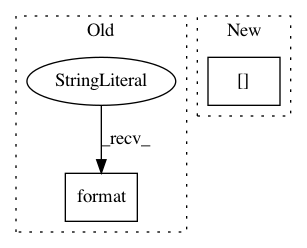

0e49e55d906660e5c9168447c77ebc6d917dda5c,examples/development/variants.py,,get_variant_spec,#Any#Any#Any#Any#,492
Before Change
def get_variant_spec(universe, domain, task, policy):
variant_spec = {
"prefix": "{}/{}/{}".format(universe, domain, task),
"domain": domain,
"task": task,
"universe": universe,
After Change
),
"algorithm_params": deep_update(
ALGORITHM_PARAMS_BASE,
ALGORITHM_PARAMS_PER_DOMAIN[domain]
),
"replay_pool_params": {
"type": "SimpleReplayPool",
"kwargs": {
In pattern: SUPERPATTERN
Frequency: 3
Non-data size: 2
Instances
Project Name: rail-berkeley/softlearning
Commit Name: 0e49e55d906660e5c9168447c77ebc6d917dda5c
Time: 2018-10-22
Author: hartikainen@berkeley.edu
File Name: examples/development/variants.py
Class Name:
Method Name: get_variant_spec
Project Name: rail-berkeley/softlearning
Commit Name: 8e6fc06cc156510d37decf430cf3df0853285779
Time: 2018-10-19
Author: hartikainen@berkeley.edu
File Name: softlearning/value_functions/utils.py
Class Name:
Method Name: get_Q_function_from_variant
Project Name: rail-berkeley/softlearning
Commit Name: 9caa24c58689c1d6f3d982f623ceab8f78e7362d
Time: 2018-10-20
Author: hartikainen@berkeley.edu
File Name: examples/multigoal_sac.py
Class Name:
Method Name: run_experiment